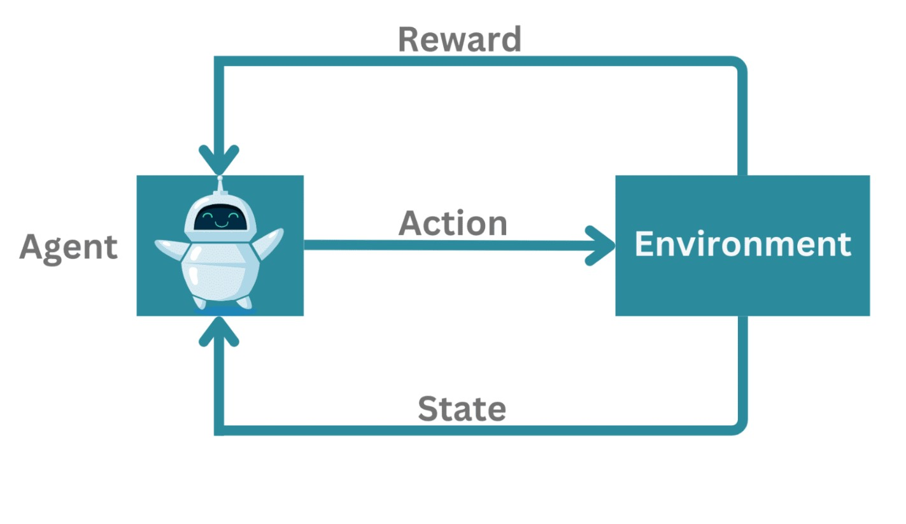

Reinforcement Learning-based Frequency Control for Renewable Energy Microgrids
This project focuses on using Reinforcement Learning (RL) to maintain stable frequency in a renewable energy microgrid by adjusting power flow intelligently.
- What is a Microgrid:
- A microgrid is a small power system that includes renewable energy sources (solar, wind), batteries, and loads. It can work independently or with the main power grid.
- Problem:
- Renewable energy is unpredictable, causing frequency variations that need to be controlled.
- What is Reinforcement Learning (RL):
- RL is a type of machine learning where an agent learns by interacting with the system and improving based on rewards.
RL Concepts in our Project:
- State
- The current condition of the microgrid, like frequency deviation and active power.
- Action
- The control actions taken, such as adjusting battery power or changing generator output based on state
- Reward
- A score given to the RL agent based on how well it maintains a stable frequency.
- Goal of the Project:
- The RL agent learns to take the best actions to keep the microgrid frequency stable, improving efficiency and reducing power fluctuations.
